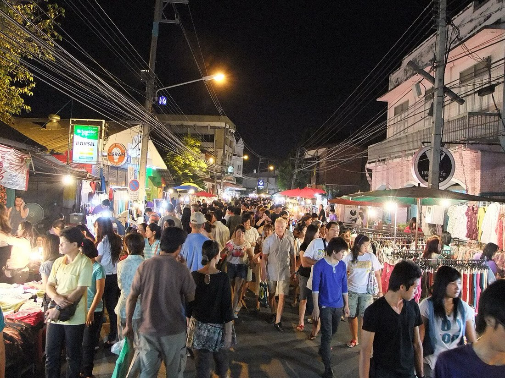

📷 chootrongตลาด · Markets (51)
— ผู้สนับสนุน · sponsor —สวนอาหาร Garden Restaurant — 69 ถนนลอยเคราะห์ · เบียร์เย็นจัด ส้มตำอร่อยที่สุดในเมือง · บอกว่าแนนส่งมาเจ้า · Garden Restaurant — 69 Loi Kroh Road · ice-cold beers, the best som tam in town · tell them Nan sent you!ลงโฆษณาที่นี่ · advertise here
🐜 = ข้อมูลที่มีแล้ว เต็มที่ ๙ ตัว — ชื่อไทย ชื่ออังกฤษ เบอร์ LINE เวลาเปิด เว็บ รูป เจ้าของยืนยัน และมดเพิ่งไปเดิน · ข้อมูลคืออำนาจ เติมให้ครบได้ฟรี · 🐜 = one ant per fact we hold, nine when a listing is complete — Thai name, English name, phone, LINE, hours, a live website, a photo, owner-confirmed, recently walked. Information is power; filling it in is free.
- Amity Green Lantern🐜1
- Ban Tham Food Market🐜1
- Ban Tham Morning Market🐜1
- Covered Market🐜1
- Covered Market🐜1
- Doi Mae Salong Morning Market🐜2
- Doi Tung Hill Tribe Market🐜1
- ตลาดสดบ้านแม่อ้อใน · Mae Ao Nai Market🐜2
- ตลาดแม่คำ · Maekhum Market🐜2
- Market🐜1
- Market (fruit, vegetables, meat, etc)🐜1
- Night Food Market🐜1
- Sop Pao Market🐜1
- Sunday Walking Street🐜2
- Sunday Walking Street🐜2
- Walking Saturday Night Market🐜2
- municipal market🐜1
- กาดกำนัน🐜1
- กาดแลงแม่ขะจาน · Kat Laeng Mae Kha Chan🐜2
- ตลาดชุมชนริมน้ำกก · Rim Nam Kok Community Market🐜2
- ตลาดดอยเวา🐜1
- ตลาดประตูล้อ · Pratu Lo Market🐜2
- ตลาดศิริเนตร🐜1
- ตลาดสด · fresh-food Sector🐜2
- ตลาดสดกลางเวียง · Klang Wiang Market🐜2
- ตลาดสดชุมชน บ้านศาลา🐜1
- ตลาดสดนางแล · Nang Lae Fresh Market🐜2
- ตลาดสดบ้านจอเจริญ · Ban Cho Charoen Market🐜2
- ตลาดสดบ้านด้าย · Ban Dai Marketplace🐜2
- ตลาดสดบ้านใหม่🐜1
- ตลาดสดประจำหมู่บ้าน🐜1
- ตลาดสดเทศบาล 2 · Municipal Fresh Market 2🐜3
- ตลาดสดเทศบาล ๑ · Municipal Market 1🐜2
- ตลาดสดเทศบาลตำบลเวียงชัย · Wiang Chai Subdistrict-municipality (Thesaban tambon) Market🐜2
- ตลาดสดเหมืองแดง หมู่1 · Mueang Daeng Fresh Market🐜2
- ตลาดสดแม่ขะจาน · Mae Kachan Market🐜2
- ตลาดสดแม่สรวย · Mae Suai market🐜2
- ตลาดสดไทยทอง · Thai Thong Food Market🐜2
- ตลาดหกแยก🐜1
- ตลาดเช้า · Talat Chao🐜2
- ตลาดเด่นห้า · Den Ha Marketplace🐜2
- ตลาดเทศบาลตำบลบ้านดู่ · Bandu Municipality Market🐜2
- ตลาดเฮียชาญ แม่ขะจาน · Talat Hia Chan Mae Khachan🐜2
- ตลาดใหม่แม่กร · Mai Mae Korn Market🐜2
- ตลาดไฟไหม้ · Fai Mai Market🐜2
- ร้านขายของ🐜1
- ร้านขายอาหาร🐜1
- อาคารผลไม้ · Fruit Sector🐜2
- อาคารผัก · Vegetable Sector🐜2
- เชียงรายไนท์บาร์ซา · Night Bazaar🐜2
- โชคชัยพาน 2006🐜1
⬇ GeoJSON (51 จุด · points)